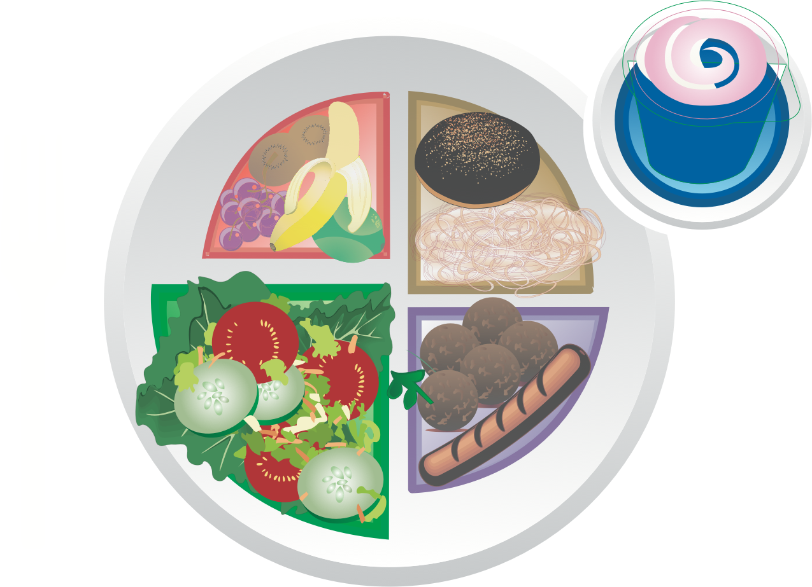

الخضروات
يجب أن يُملأ نصف طبقك بالخضروات ! فالخضروات مليئة بالفيتامينات، والمعادن، والألياف، ويمكن للجميع الاستمتاع بقدر أكبر منها نظرًا لاحتوائها على القليل من السعرات الحرارية والكربوهيدرات! ورغم ذلك، لم تُخلق جميع الخضروات متساوية؛ فيوجد نوعان رئيسيان من الخضروات - النشوية وغير النشوية.
التزم بالخضروات غير النشوية بقدر المستطاع. فبالرغم من أن الخضروات النشوية لها فوائد غذائية، إلا أنها ترفع مستويات الجلوكوز في الدم.
الخضروات غير النشوية:
- الهليون
- البروكلي
- الكرنب
- الجزر
- القرنبيط
- الكرفس
- الخيار
- الباذنجان
- اللفت
- البامية
- خضروات السلطة (الخس، والخس الروماين، والسبانخ، والجرجير)
- الطماطم
- الكوسة

الخضروات النشوية:
- الذرة
- البازلاء الخضراء
- الفاصوليا الخضراء
- الجزر الأبيض
- موز الجنة
- البطاطس
- اليقطين
- القرع

نصائح دروبي:
للحصول على أكبر قدر من الفائدة الغذائية، تناول الخضروات النيئة، أو المطهوة في المايكرويف أو بالبخار للمساعدة في الحفاظ على الفيتامينات والمعادن. كما يمكنك الحصول على معظم العناصر الغذائية عبر تناول أكبر عدد ممكن من الخضروات الملونة بمختلف ألوانها!